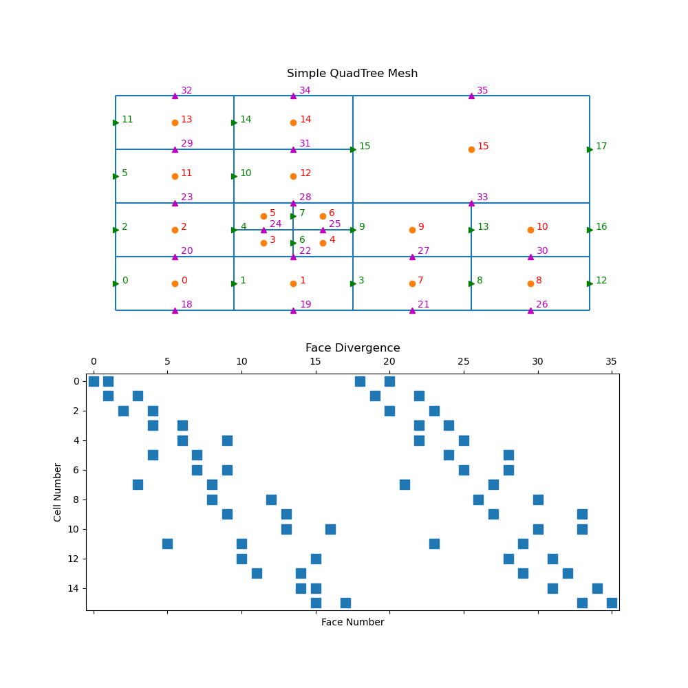

Note
Go to the end to download the full example code.
QuadTree: FaceDiv#
For a tree mesh, there needs to be special attention taken for the hanging faces to achieve second order convergence for the divergence operator. Although the divergence cannot be constructed through Kronecker product operations, the initial steps are exactly the same for calculating the stencil, volumes, and areas. This yields a divergence defined for every cell in the mesh using all faces. There is, however, redundant information when hanging faces are included.
import discretize
import matplotlib.pyplot as plt
import numpy as np
def run(plotIt=True, n=60):
M = discretize.TreeMesh([[(1, 16)], [(1, 16)]], levels=4)
M.insert_cells(np.array([5.0, 5.0]), np.array([3]))
M.number()
if plotIt:
fig, axes = plt.subplots(2, 1, figsize=(10, 10))
M.plot_grid(centers=True, nodes=False, ax=axes[0])
axes[0].axis("off")
axes[0].set_title("Simple QuadTree Mesh")
axes[0].set_xlim([-1, 17])
axes[0].set_ylim([-1, 17])
for ii, loc in zip(range(M.nC), M.gridCC):
axes[0].text(loc[0] + 0.2, loc[1], "{0:d}".format(ii), color="r")
axes[0].plot(M.gridFx[:, 0], M.gridFx[:, 1], "g>")
for ii, loc in zip(range(M.nFx), M.gridFx):
axes[0].text(loc[0] + 0.2, loc[1], "{0:d}".format(ii), color="g")
axes[0].plot(M.gridFy[:, 0], M.gridFy[:, 1], "m^")
for ii, loc in zip(range(M.nFy), M.gridFy):
axes[0].text(
loc[0] + 0.2, loc[1] + 0.2, "{0:d}".format((ii + M.nFx)), color="m"
)
axes[1].spy(M.face_divergence)
axes[1].set_title("Face Divergence")
axes[1].set_ylabel("Cell Number")
axes[1].set_xlabel("Face Number")
if __name__ == "__main__":
run()
plt.show()
Total running time of the script: (0 minutes 0.170 seconds)